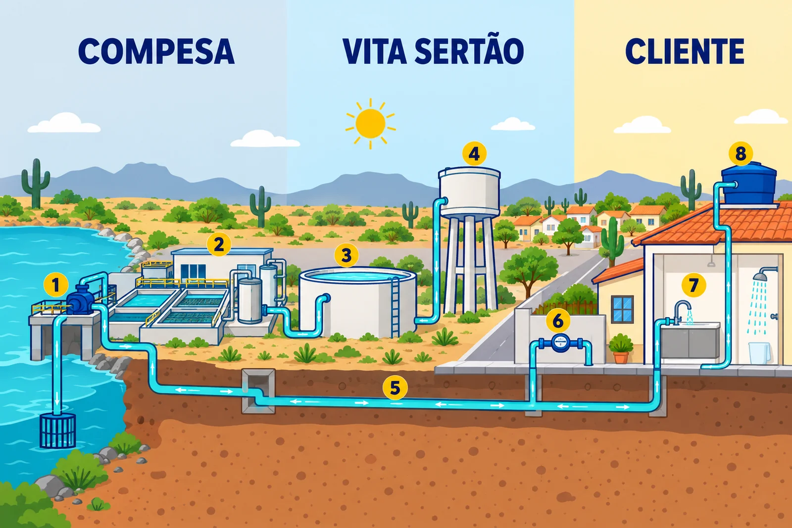
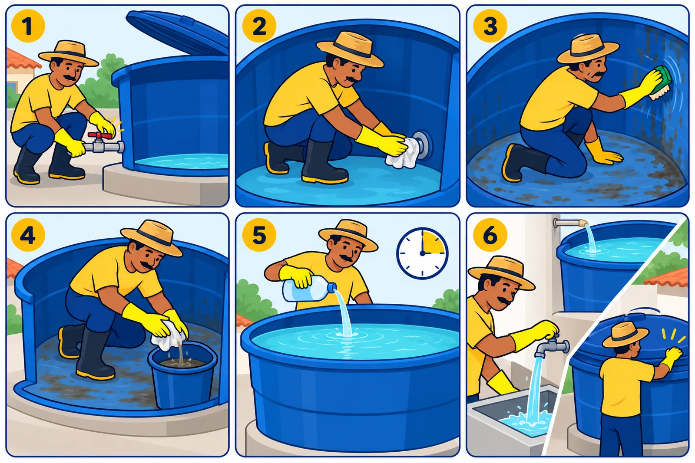

Água tratada
Distribuição de Água
Conheça o caminho da água, a operação das redes e as orientações para cuidar do seu abastecimento.


Distribuição de água
Recursos hídricos do Sertão
No Sertão, cada gota importa. A região é marcada por chuvas irregulares, longos períodos de estiagem, altas temperaturas e elevada evaporação. Nesse cenário, cuidar da água e utilizar os recursos hídricos de forma responsável é essencial para garantir a segurança hídrica das comunidades.
A Compesa (Companhia Pernambucana de Saneamento) é responsável pela produção da água, incluindo a captação e o tratamento, e pela entrega da água tratada à VITA Sertão. A partir daí, a VITA atua na distribuição, operação e manutenção dos sistemas, levando água tratada às residências, aos estabelecimentos comerciais e aos demais usuários da área de concessão, com eficiência e segurança.
Também faz parte da nossa atuação a coleta e o tratamento do esgoto. Ao realizar esse trabalho de forma adequada, contribuímos para evitar que os efluentes sem tratamento alcancem o solo, os rios, os riachos, os açudes e outros corpos d’água, reduzindo impactos ambientais e ajudando a preservar os recursos hídricos do Sertão.
A VITA também é responsável pela gestão comercial dos serviços, mantendo o relacionamento com os usuários e apoiando uma utilização mais consciente e eficiente da água. Por meio da redução de perdas, da operação adequada dos sistemas de distribuição e esgotamento sanitário e da conscientização da população, contribuímos para o uso sustentável da água.
Distribuição de água
Da Compesa até a sua casa
Distribuição de água
Após ser tratada pela Compesa, a água é entregue aos sistemas operados pela VITA Sertão. Ela é armazenada em reservatórios de distribuição e levada até os reservatórios dos bairros, estrategicamente localizados. De lá, a água segue por tubulações de maior porte (adutoras) e entra nas redes de distribuição até chegar ao consumidor final.
Nas casas das pessoas, o armazenamento é feito geralmente em caixas d’água. A responsabilidade da VITA Sertão é levar a água tratada até a entrada do imóvel, onde estão o cavalete e o hidrômetro (o aparelho que registra o consumo de água). A partir daí, o cliente é quem deve cuidar das instalações internas e da limpeza e conservação do seu reservatório.
O caminho da água e quem cuida de cada etapa

Compesa
-
Captação
A água é retirada dos mananciais da região.
-
Tratamento
A água é tratada e entregue à VITA Sertão nos pontos de entrega.
VITA Sertão
-
Reservatórios de distribuição
A água tratada é armazenada nos reservatórios dos sistemas operados pela VITA Sertão.
-
Reservatórios dos bairros
Depois, segue para reservatórios estrategicamente localizados nos bairros.
-
Adutoras e redes
Adutoras e redes de distribuição levam a água até o consumidor final.
-
Cavalete e hidrômetro
A água chega à entrada do imóvel, onde o hidrômetro registra o consumo.
Cliente
-
Instalações internas
Do hidrômetro para dentro, canos e torneiras ficam sob os cuidados do cliente.
-
Caixa d’água
A limpeza e a conservação do reservatório da casa também ficam com o cliente.
Depois de usada, a água vira esgoto, e a VITA Sertão também cuida da coleta e do tratamento. Conheça a coleta e o tratamento de esgoto
Cuide da sua caixa d’água
A caixa d’água guarda uma reserva para a sua família e fica sob os cuidados de quem mora no imóvel. Com hábitos simples, a água continua limpa e segura.
-
Mantenha sempre tampada
A tampa bem encaixada impede a entrada de sujeira, de insetos e do mosquito da dengue.
-
Limpe a cada seis meses
Esvazie, lave e higienize o reservatório pelo menos duas vezes por ano.
-
Confira a boia e o ladrão
A boia regulada e o extravasor (ladrão) livre evitam transbordamento e desperdício.
-
Facilite o acesso
Instale a caixa em local protegido e fácil de alcançar, para a limpeza e a manutenção.
Ferramenta educativa
Calculadora orientativa de reserva de água
Faça uma estimativa em litros com base no número de moradores, no consumo diário e nos dias de reserva informados.
Esta conta é apenas matemática e não define o tamanho ideal da caixa nem substitui avaliação técnica. Os valores-base são provisórios e não representam recomendação oficial da VITA Sertão.
Informe os moradores para ver uma estimativa.

Como limpar a caixa d’água
Programe a limpeza a cada seis meses e sempre que houver suspeita de contaminação.
- Feche o registro de entrada e use a água da caixa até restar pouca no fundo.
- Feche a saída da caixa para a sujeira não descer pelos canos da casa.
- Esfregue paredes e fundo com escova e esponja usadas só para isso, sem sabão.
- Retire a água suja e os resíduos com balde e pano.
- Faça a desinfecção com o produto e a quantidade indicados pela autoridade sanitária, respeitando o tempo de contato.
- Abra a saída, deixe a caixa encher de novo e feche bem a tampa.
Uso eficiente da água
Cada gota importa
Uso eficiente da água
No semiárido, usar bem a água disponível é tão importante quanto levá-la até as casas.
-
Gestão de demanda
É usar a água disponível de forma mais eficiente: combater desperdícios, melhorar a medição, acompanhar os maiores consumos, orientar os clientes e planejar a distribuição de acordo com a disponibilidade de água. Em uma região sujeita a estiagens, cada litro economizado aumenta a segurança do abastecimento.
-
Controle de perdas
Perdas acontecem quando a água tratada não chega a ser medida ou usada pelo cliente, por vazamentos em redes e ramais, problemas de medição ou ligações irregulares. O combate às perdas combina troca de redes, pesquisa de vazamentos, controle de pressão e modernização dos hidrômetros. A meta da VITA Sertão é reduzir as perdas para 25%.
-
Eliminador de ar
Os chamados “eliminadores de ar” são vendidos com a promessa de impedir a passagem de ar pelo hidrômetro. Antes de instalar qualquer equipamento na ligação de água ou perto do medidor, consulte a concessionária: o hidrômetro e a ligação fazem parte de um sistema regulado e não devem ser alterados sem autorização.